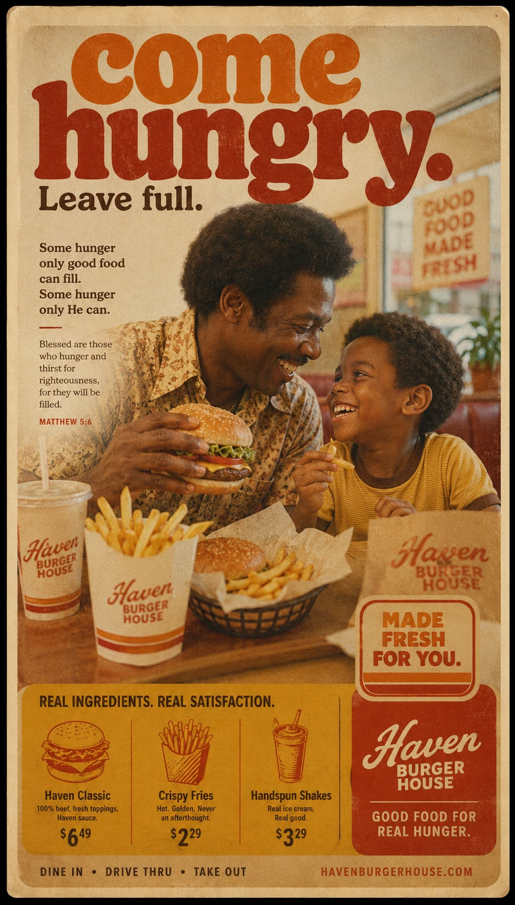

Come hungry. Leave full.
Some hunger is lunch. Some hunger is harder to name. This page does not solve either one; it just sets a table and points to the verse.
Clip this corner
Good for one conversation that starts with "What are you hungry for?"
Expires: not today.
Good for one conversation that starts with "What are you hungry for?"
Expires: not today.